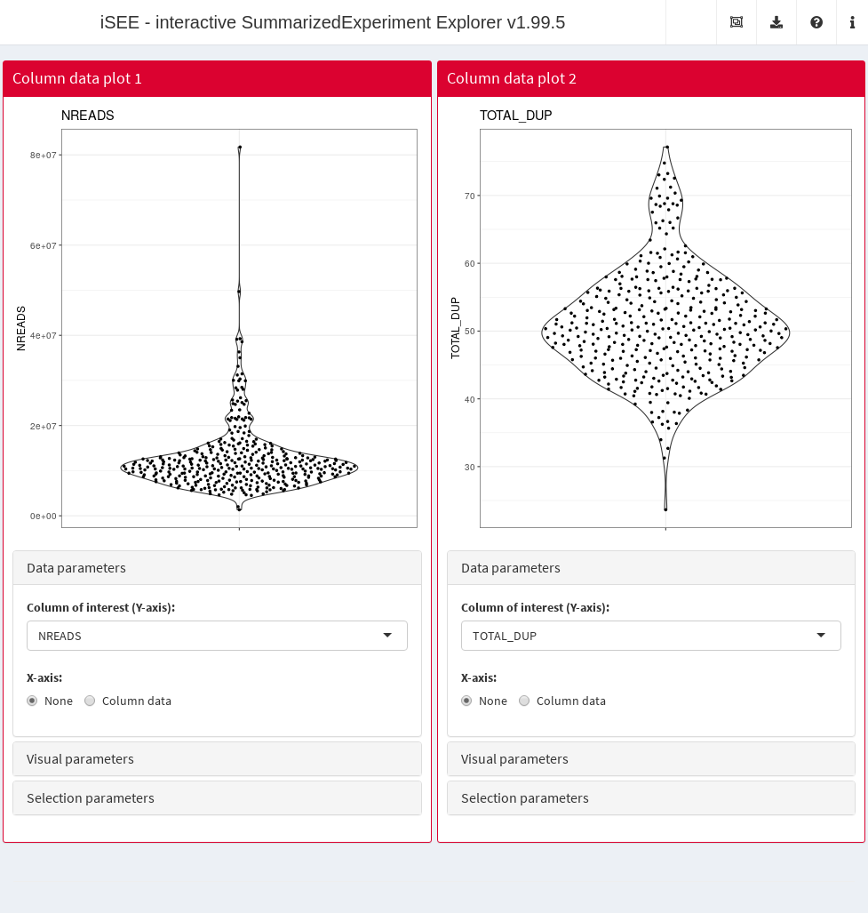
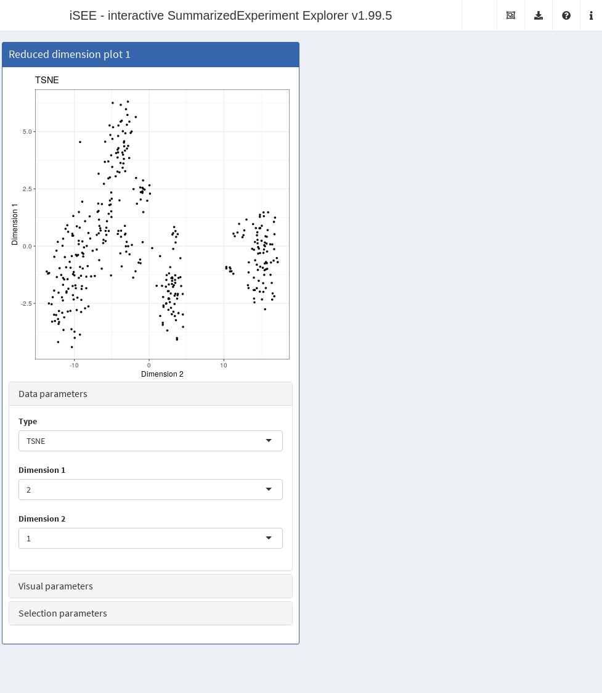
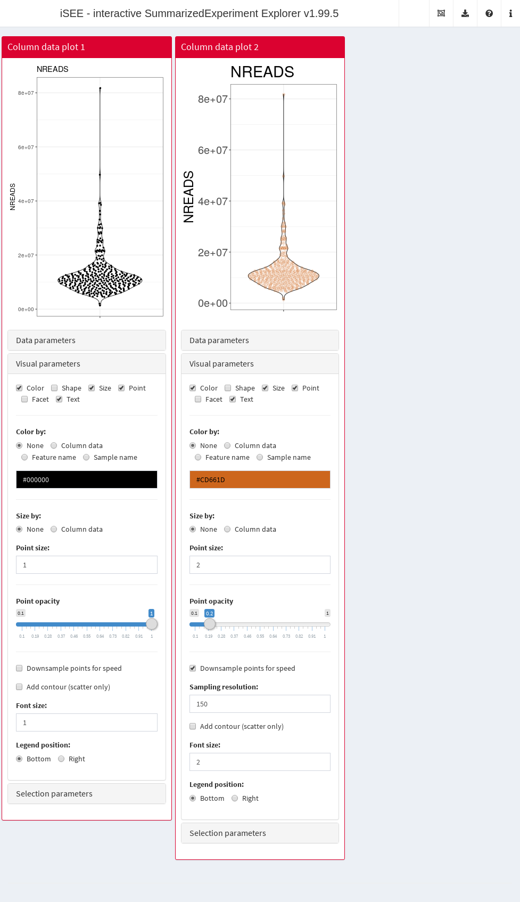
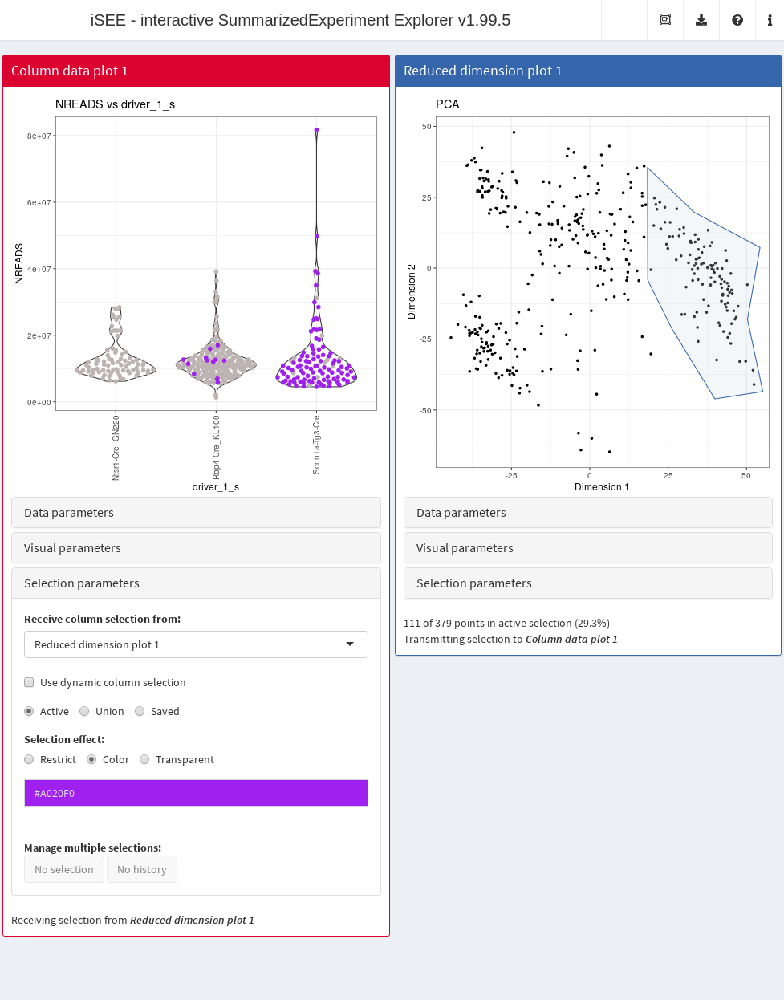

Configuring iSEE apps
Kevin Rue-Albrecht
MRC WIMM Centre for Computational Biology, University of Oxford, Oxford, OX3 9DS, UKkevinrue67@gmail.com
Federico Marini
Institute of Medical Biostatistics, Epidemiology and Informatics (IMBEI), MainzCenter for Thrombosis and Hemostasis (CTH), Mainzmarinif@uni-mainz.de
Charlotte Soneson
Friedrich Miescher Institute for Biomedical Research, Basel, SwitzerlandSIB Swiss Institute of Bioinformaticscharlottesoneson@gmail.com
Aaron Lun
infinite.monkeys.with.keyboards@gmail.com4 December 2023
Source:vignettes/configure.Rmd
configure.RmdCompiled date: 2023-12-04
Last edited: 2020-04-20
License: MIT + file LICENSE
Changing the default start configuration
The default start configuration with one plot of each type may not
always be the most appropriate. iSEE allows the user to
programmatically modify the initial settings (Rue-Albrecht et al. 2018), avoiding the need to
click through the choices to obtain the desired panel setup. Almost
every aspect of the initial app state can be customized, down to whether
or not the parameter boxes are open or closed!
To demonstrate this feature, let’s assume that we are only interested
in feature assay plot panels. The default set of panels can be
changed via the initialPanels argument of the
iSEE function call. Given a
SingleCellExperiment or SummarizedExperiment
object named sce1, the following code opens an app with two
adjacent feature assay plots. Note that each panel is set to occupy half
the width of the application window, which is set to 12 units by the
shiny
package.
library(iSEE)
app <- iSEE(sce, initial=list(
FeatureAssayPlot(PanelWidth=6L),
FeatureAssayPlot(PanelWidth=6L)
))
The genes to show on the Y-axis in the two plots can be specified via
the YAxisFeatureName argument to the respective panels in
iSEE.
app <- iSEE(sce, initial=list(
FeatureAssayPlot(YAxisFeatureName="0610009L18Rik"),
FeatureAssayPlot(YAxisFeatureName="0610009B22Rik")
)) 
This will open the app with two feature assay plots, showing the selected genes. Of course, from this starting point, all the interactive functionality is still available, and new panels can be added, modified and linked via point selection.
Data parameters
Overview
The data parameters control the source of the information represented on the X-axis and Y-axis of each plot. Those parameters are accessible at runtime in the eponymous collapsible box.
We refer users to the individual help page of each panel type listed below to learn more about the choices of X-axis variables for each type of panel.
From a running iSEE application, you can also display
all the R code that is required to set up the current configuration by
clicking on Display panel settings under the export icon in
the top-right corner.
Setting the Y-axis
The nature of the Y-axis is defined by the type of panel. For
instance, column data plot panels require the name of a column
in the colData(sce). Users can preconfigure the Y-axis of
individual column data plot panels as follows:
app <- iSEE(sce, initial=list(
ColumnDataPlot(YAxis="NREADS", PanelWidth=6L, DataBoxOpen=TRUE),
ColumnDataPlot(YAxis="TOTAL_DUP", PanelWidth=6L, DataBoxOpen=TRUE)
))
Setting the X-axis
The X-axis can be set to different types of variables. The type of
variable is generally set in the XAxis slot, while the name
of the variable is stored in a different slot depending on the value of
XAxis. At runtime, this allows the app to remember the last
selected variable of each type.
For instance, the XAxis slot of the feature assay
plot can have up to four different values:
-
"None": does not require any addition input (draws a single violin for all features). -
"Column data": requiresXAxisColumnDatato be set to a column name in thecolData(sce). -
"Feature name": requires either-
XAxisFeatureNameto be set to a feature name (or positional index) inrownames(sce). -
XAxisFeatureSourceto be set to the name of a Row data table panel with an active selection set in its ownSelectedcolumn.
-
Each of these scenarios is demonstrated below:
fex <- FeatureAssayPlot(DataBoxOpen=TRUE, PanelWidth=6L)
# Example 1
fex1 <- fex
fex1[["XAxis"]] <- "None"
# Example 2
fex2 <- fex
fex2[["XAxis"]] <- "Column data"
fex2[["XAxisColumnData"]] <- "Core.Type"
# Example 3a
fex3 <- fex
fex3[["XAxis"]] <- "Feature name"
fex3[["XAxisFeatureName"]] <- "Zyx"
# Example 4 (also requires a row statistic table)
fex4 <- fex
fex4[["XAxis"]] <- "Feature name"
fex4[["XAxisFeatureSource"]] <- "RowDataTable1"
rex <- RowDataTable(Selected="Ints2", Search="Ints", PanelWidth=12L)
# Initialisation
app <- iSEE(sce, initial=list(fex1, fex2, fex3, fex4, rex))
Note how Example 3b requires an active row data
table as a source of selection. To facilitate visualisation, we
added the features identifiers as the gene_id column in
rowData(sce), we preselected the feature
"Ints2", and we prefiltered the table using the pattern
"Ints" on the gene_id column to show this
active selection.
Configuring the type of dimensionality reduction
In the case of reduced dimension plots, data parameters
include the name of the reduced dimension slot from which to fetch
coordinates. This information is stored in the Type
slot:
app <- iSEE(sce, initial=list(
ReducedDimensionPlot(DataBoxOpen=TRUE, Type="TSNE",
XAxis=2L, YAxis=1L, PanelWidth=6L)
))
Configuring the type of assay data
For axes linked to an assay, such as the Y-axis of feature assay
plot panels, the assay to display can be set through the
Assay argument:
app <- iSEE(sce, initial=list(
FeatureAssayPlot(DataBoxOpen=TRUE, Assay="logcounts", PanelWidth=6L),
FeatureAssayPlot(DataBoxOpen=TRUE, Assay="tophat_counts", PanelWidth=6L)
))
Visual parameters
Overview
The visual parameters control the appearance of data points. Those parameters include: color, shape, size, opacity, facet, as well as font size and legend position. Some visual parameters can be associated to variables and controlled through ggplot2 aesthetics, while others can be set to constant user-defined values. All those parameters are accessible at runtime in the eponymous collapsible box.
We refer users to the ?"iSEE point parameters" help page
to learn more about the visual parameters variables configurable for
each type of panel; and to the ?"iSEE selection parameters"
help page to learn more about the choices of parameters that control the
appearance of point selections in receiver plot panels.
Configuring default visual parameters
Certain visual parameters can be set to a constant user-defined value. Those include: color, transparency (i.e., alpha), downsampling resolution, as well as text font size and legend position.
For instance, the default color of data points in column data
plot panels can be set to a value different than the default
"black" through the ColorByDefaultColor slot,
while the default transparency value is controlled through the
PointAlpha slot Here, we alter several default visual
parameters in the second panel:
cdp <- ColumnDataPlot(VisualBoxOpen=TRUE,
VisualChoices=c("Color", "Size", "Point", "Text"))
cdp2 <- cdp
cdp2[["ColorByDefaultColor"]] <- "chocolate3"
cdp2[["PointAlpha"]] <- 0.2
cdp2[["PointSize"]] <- 2
cdp2[["Downsample"]] <- TRUE
cdp2[["DownsampleResolution"]] <- 150
cdp2[["FontSize"]] <- 2
app <- iSEE(sce, initial=list(cdp, cdp2))
Note that for this demonstration, we facilitate visualization of the
preconfigured arguments by setting VisualChoices to display
both the "Color" and "Shape" UI panels.
Linking point aesthetics to variables
The color and point of data points can be linked to variables in a manner similar to the X-axis parameters demonstrated above.
For instance, the color of data points in column data plot
panels can be set to a variable in colData(sce) by setting
the ColorBy value to "Column data", and the
ColorByColumnData value to the desired column name:
cdp <- ColumnDataPlot(VisualBoxOpen=TRUE, VisualChoices=c("Color", "Shape"),
ColorByColumnData="Core.Type", ShapeByColumnData="Core.Type",
ColorBy="Column data", ShapeBy="Column data")
cdp2 <- cdp
cdp2[["ColorByColumnData"]] <- "TOTAL_DUP"
cdp2[["ShapeByColumnData"]] <- "driver_1_s"
app <- iSEE(sce, initial=list(cdp, cdp2))
Note that points may only be shaped by a categorical variable.
Configuring plot facets
Categorical variables may also be used to facet plots by row and
column. For instance, column data plot panels can be facet by
variables stored in the columns of colData(sce). We
demonstrate below how faceting may be enabled by row, column, or
both:
cdp <- ColumnDataPlot(VisualBoxOpen=TRUE, VisualChoices=c("Facet"),
FacetRowBy="Column data", FacetRowByColData="driver_1_s",
FacetColumnBy="Column data", FacetColumnByColData="Core.Type", PanelWidth=4L)
cdp2 <- cdp
cdp2[["FacetRowBy"]] <- "None"
cdp3 <- cdp
cdp3[["FacetColumnBy"]] <- "None"
app <- iSEE(sce, initial=list(cdp, cdp2, cdp3))
Selection parameters
The initial state of iSEE applications can be configured all
the way down to point selections and links between panels. For instance,
in the example below, we preconfigure the
ColumnSelectionSource column of a column data plot
panel to receive a point selection from a reduced dimension
plot panel. This requires an active selection in the reduced
dimension plot panel, which is achieved by preconfiguring the
BrushData slot.
The simplest way to obtain a valid BrushData value is to
launch an iSEE application, make the desired selection using a
Shiny brush, open the iSEE code tracker, and copy paste the
relevant point selection data. The result should look as below:
# Preconfigure the receiver panel
cdArgs <- ColumnDataPlot(
XAxis="Column data",
XAxisColumnData="driver_1_s",
# Configuring the selection parameters.
SelectionBoxOpen=TRUE,
ColumnSelectionSource="ReducedDimensionPlot1",
ColorBy="Column selection",
# Throwing in some parameters for aesthetic reasons.
ColorByDefaultColor="#BDB3B3",
PointSize=2,
PanelWidth=6L)
# Preconfigure the sender panel, including the point selection.
# NOTE: You don't actually have to write this from scratch! Just
# open an iSEE instance, make a brush and then look at the 'BrushData'
# entry when you click on the 'Display panel settings' button.
rdArgs <- ReducedDimensionPlot(
BrushData = list(
xmin = 13.7, xmax = 53.5, ymin = -36.5, ymax = 37.2,
coords_css = list(xmin = 413.2, xmax = 650.2, ymin = 83.0, ymax = 344.0),
coords_img = list(xmin = 537.2, xmax = 845.3, ymin = 107.9, ymax = 447.2),
img_css_ratio = list(x = 1.3, y = 1.3),
mapping = list(x = "X", y = "Y"),
domain = list(left = -49.1, right = 57.2, bottom = -70.4, top = 53.5),
range = list(left = 50.9, right = 873.9, bottom = 603.0, top = 33.1),
log = list(x = NULL, y = NULL),
direction = "xy",
brushId = "ReducedDimensionPlot1_Brush",
outputId = "ReducedDimensionPlot1"
),
PanelWidth=6L
)
app <- iSEE(sce, initial=list(cdArgs, rdArgs))
Note that in the example above, we color selected data points in the
receiver panel by setting the ColorBy argument to
"Column selection". The default is to increase the
transparency of unselected data points; another option is to set
ColumnSelectionRestrict to TRUE to show only
the selected data points.
An identical process can be followed to preconfigure a lasso point selection:
# Preconfigure the sender panel, including the point selection.
# NOTE: again, you shouldn't try writing this from scratch! Just
# make a lasso and then copy the panel settings in 'BrushData'.
rdArgs[["BrushData"]] <- list(
lasso = NULL, closed = TRUE, panelvar1 = NULL, panelvar2 = NULL,
mapping = list(x = "X", y = "Y"),
coord = structure(c(18.4,
18.5, 26.1, 39.9,
55.2, 50.3, 54.3,
33.3, 18.4, 35.5,
-4.2, -21.2, -46.1,
-43.5, -18.1, 7.3,
19.7, 35.5), .Dim = c(9L, 2L)
)
)
app <- iSEE(sce, initial=list(cdArgs, rdArgs))
Writing your own tour
By providing a data frame to the tour argument of
iSEE, you can create your own tour that will start when the
app is launched2. The data frame should have two columns,
element and intro:
introtour <- defaultTour()
head(introtour)
#> element
#> 1 #Welcome
#> 2 #allpanels
#> 3 #ReducedDimensionPlot1
#> 4 #ReducedDimensionPlot1_DataBoxOpen
#> 5 #ReducedDimensionPlot1_Type + .selectize-control
#> 6 #ReducedDimensionPlot1
#> intro
#> 1 Welcome to the interactive tour for iSEE - the Interactive SummarizedExperiment Explorer.<br/><br/>You will be shown around the different components of iSEE and learn the basic usage mechanisms by doing. Highlighted elements will respond to the user's actions, while the rest of the UI will be shaded. You will be prompted at particular spots to perform some actions, which will be marked with "<strong>Action:</strong>" text. Please take care to follow these instructions, since later parts of the tour may assume that all the actions from previous steps have been performed.<br/><br/><strong>Action:</strong> now, click on the 'Next' button or use the right arrow of your keyboard to proceed into your tour.
#> 2 iSEE provides a Shiny interface that allows you to generate a series of panels for exploring <code>SummarizedExperiment</code> objects. Here, we use single-cell RNA sequencing data from the <a href="https://doi.org/doi:10.18129/B9.bioc.scRNAseq"><i>scRNAseq</i> package</a>, specifically a subset of gene expression profiles from cells in the mouse visual cortex <a href="https://doi.org/10.1038/nn.4216">(Tasic <i>et al.</i>, 2016)</a>. Each column of the <code>SummarizedExperiment</code> corresponds to a cell, while each row corresponds to a gene.<br/><br/>Using iSEE, you can generate a variety of different panel types to visualize the data. These are described in more detail in the following steps.
#> 3 For example, you can construct a <font color="#402ee8">Reduced dimension plot</font> to visualize a low-dimensional representation (e.g., PCA, <i>t</i>-SNE) of our dataset of interest. Here, each point represents a cell.
#> 4 For each plot panel, a variety of parameters are available to control the appearance and behaviour of the plot. These parameters are located in these collapsible boxes, such as the <font color="#402ee8">Data parameters</font> box that contains parameters related to the type of data being shown.<br /><br /><strong>Action:</strong> click on the header of this collapsible box to see the available options.
#> 5 <strong>Action:</strong> change this to <code>TSNE</code> to see the two-dimensional <i>t</i>-SNE representation.
#> 6 You can see how the panel immediately switched to the requested dimensionality reduction result.Each entry of the element column contains the name of a
UI element in the application, prefixed by a hash sign (#).
The intro column contains the corresponding text (or basic
HTML) that is to be shown at each step.
The simplest way to get started is to copy the
intro_firststeps.txt file from the
inst/extdata folder and edit it for your specific data set.
More customized tours require some knowledge of the names of the UI
elements to put in the element column. We recommend one of
the following options:
- If using Firefox, open the
Toolsmenu. SelectWeb Developer, and in the submenu, selectInspector. This will toggle a toolbar, and you will be able to read out the name of the element of interest when you hover and click on it. If you want to select another element, you might need to re-click on the icon in the upper left corner of the toolbox,Pick an element from the page. - If using Safari, open the
Developmenu and selectShow Web Inspector. To toggle the selection of elements, you need to click on the crosshair icon in the top part of the toolbox, then again, explore the desired element by clicking or hovering on it. - If using Chrome, from the
Viewmenu, select firstDeveloperand thenDeveloper Tools. Click then on the selecting arrow in the top left corner, and similarly to the other browsers, hover or click on the element of interest to obtain its name. - Alternatively, the SelectorGadget browser extension can be used.
Most elements can be identified using the above strategies. Selectize
widgets are trickier but can be handled with, e.g.,
#ComplexHeatmapPlot1_ColumnData + .selectize-control.
Please see the intro_firststeps.txt file in the
inst/extdata folder for more of these examples.
Sometimes it is useful to place one step of the tour in the center.
To do so, simply put a hash sign before a word which does not link
directly to any CSS selector (e.g., as we do for #Welcome)
in the corresponding element column.
Further reading
Users should refer to the following help pages for the full list of
values that can be specified in iSEE:
?ReducedDimensionPlot?ColumnDataPlot?ColumnDataTable?FeatureAssayPlot?RowDataPlot?RowDataTable?SampleAssayPlot?ComplexHeatmapPlot
Some fairly complex configurations for a variety of data sets can be found at https://github.com/iSEE/iSEE2018. These may serve as useful examples for setting up your own configurations.
Session Info
sessionInfo()
#> R Under development (unstable) (2023-11-22 r85609)
#> Platform: x86_64-pc-linux-gnu
#> Running under: Ubuntu 22.04.3 LTS
#>
#> Matrix products: default
#> BLAS: /usr/lib/x86_64-linux-gnu/openblas-pthread/libblas.so.3
#> LAPACK: /usr/lib/x86_64-linux-gnu/openblas-pthread/libopenblasp-r0.3.20.so; LAPACK version 3.10.0
#>
#> locale:
#> [1] LC_CTYPE=en_US.UTF-8 LC_NUMERIC=C
#> [3] LC_TIME=en_US.UTF-8 LC_COLLATE=en_US.UTF-8
#> [5] LC_MONETARY=en_US.UTF-8 LC_MESSAGES=en_US.UTF-8
#> [7] LC_PAPER=en_US.UTF-8 LC_NAME=C
#> [9] LC_ADDRESS=C LC_TELEPHONE=C
#> [11] LC_MEASUREMENT=en_US.UTF-8 LC_IDENTIFICATION=C
#>
#> time zone: UTC
#> tzcode source: system (glibc)
#>
#> attached base packages:
#> [1] stats4 stats graphics grDevices utils datasets methods
#> [8] base
#>
#> other attached packages:
#> [1] iSEE_2.15.0 SingleCellExperiment_1.25.0
#> [3] SummarizedExperiment_1.33.1 Biobase_2.63.0
#> [5] GenomicRanges_1.55.1 GenomeInfoDb_1.39.1
#> [7] IRanges_2.37.0 S4Vectors_0.41.2
#> [9] BiocGenerics_0.49.1 MatrixGenerics_1.15.0
#> [11] matrixStats_1.1.0 BiocStyle_2.31.0
#>
#> loaded via a namespace (and not attached):
#> [1] bitops_1.0-7 rlang_1.1.2 magrittr_2.0.3
#> [4] shinydashboard_0.7.2 clue_0.3-65 GetoptLong_1.0.5
#> [7] compiler_4.4.0 mgcv_1.9-0 png_0.1-8
#> [10] systemfonts_1.0.5 vctrs_0.6.5 stringr_1.5.1
#> [13] pkgconfig_2.0.3 shape_1.4.6 crayon_1.5.2
#> [16] fastmap_1.1.1 XVector_0.43.0 ellipsis_0.3.2
#> [19] fontawesome_0.5.2 utf8_1.2.4 promises_1.2.1
#> [22] rmarkdown_2.25 shinyAce_0.4.2 ragg_1.2.6
#> [25] purrr_1.0.2 xfun_0.41 zlibbioc_1.49.0
#> [28] cachem_1.0.8 jsonlite_1.8.7 highr_0.10
#> [31] later_1.3.1 DelayedArray_0.29.0 parallel_4.4.0
#> [34] cluster_2.1.6 R6_2.5.1 bslib_0.6.1
#> [37] stringi_1.8.2 RColorBrewer_1.1-3 jquerylib_0.1.4
#> [40] Rcpp_1.0.11 bookdown_0.37 iterators_1.0.14
#> [43] knitr_1.45 splines_4.4.0 httpuv_1.6.12
#> [46] Matrix_1.6-4 igraph_1.5.1 tidyselect_1.2.0
#> [49] abind_1.4-5 yaml_2.3.7 doParallel_1.0.17
#> [52] codetools_0.2-19 miniUI_0.1.1.1 lattice_0.22-5
#> [55] tibble_3.2.1 shiny_1.8.0 evaluate_0.23
#> [58] desc_1.4.2 circlize_0.4.15 pillar_1.9.0
#> [61] BiocManager_1.30.22 DT_0.30 foreach_1.5.2
#> [64] shinyjs_2.1.0 generics_0.1.3 rprojroot_2.0.4
#> [67] RCurl_1.98-1.13 ggplot2_3.4.4 munsell_0.5.0
#> [70] scales_1.3.0 xtable_1.8-4 glue_1.6.2
#> [73] tools_4.4.0 colourpicker_1.3.0 fs_1.6.3
#> [76] grid_4.4.0 colorspace_2.1-0 nlme_3.1-164
#> [79] GenomeInfoDbData_1.2.11 vipor_0.4.5 cli_3.6.1
#> [82] textshaping_0.3.7 fansi_1.0.5 viridisLite_0.4.2
#> [85] S4Arrays_1.3.1 ComplexHeatmap_2.19.0 dplyr_1.1.4
#> [88] gtable_0.3.4 rintrojs_0.3.3 sass_0.4.7
#> [91] digest_0.6.33 SparseArray_1.3.1 ggrepel_0.9.4
#> [94] rjson_0.2.21 htmlwidgets_1.6.3 memoise_2.0.1
#> [97] htmltools_0.5.7 pkgdown_2.0.7 lifecycle_1.0.4
#> [100] shinyWidgets_0.8.0 GlobalOptions_0.1.2 mime_0.12
# devtools::session_info()References
We’ll re-use the example from the previous workflow.↩︎
In theory. On servers, sometimes the tour does not recognize the UI elements at start-up and needs to be restarted via the “Click me for quick tour” button to work properly.↩︎